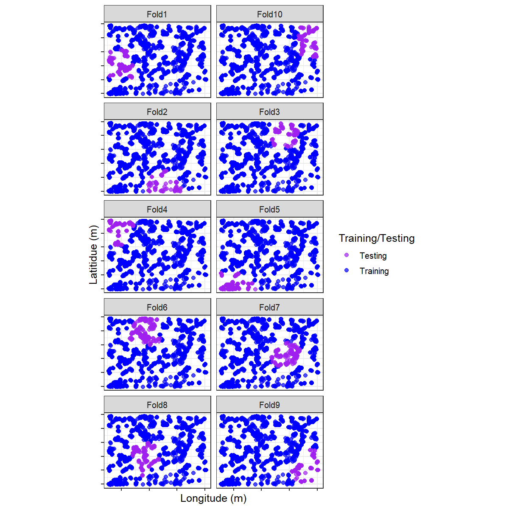
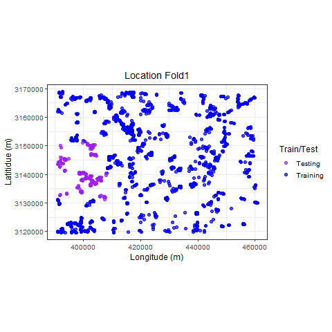

Spatial Clustering of Point Data for Machine Learning of Multiclass Classification Problems
Source:vignettes/spatial_cluster_sample.Rmd
spatial_cluster_sample.RmdIntroduction
Ecological data usually have inherent spatial structures; nearer things are more similar than distant things. This relationship can exist at any spatial scale from local to global with a positive spatial autocorrelation as a nonzero covariance between spatially proximal observations or proximal values.
This definition imposes the need for a means to measure, based on a sample of data values, the covariance between nearby points and to decide whether or not this covariance is consistent with a random spatial arrangement of values. Such non-randomness in the data are not problematic. Correlated data allows to uncover patterns from the process. However, in parametric statistical analysis of data problems can arise 1) non-randomness of error; 2) pseudo-replication-if too many observations are made within the distance at which observations are spatially structured, and 3) As the predictor variables (Independent or explanatory variables) are often correlated with dependence structures, resulting model can over-inflate the model’s accuracy by wholly or partially removing residual structures.
Parametric models can address dependence structures in the data (e.g., autoregressive or mixed model), at least in theory. However, in practice, model specification bias together with structural over-fitting, can seriously impair the diagnostic evaluations of the model. Further, well-known popular machine learning models (e.g., random forest) don’t allow accounting for such spatial dependence structures.
What happens with non-parametric models?
In an ideal model building ( or machine learning), evaluation and validation should be performed using independent data. For example, model evaluation data should not come from within the same geographic extent from which the model was built (spatially distinct). Two scenarios may arise in such cases: 1) either no such independent data exist; usually, we tend to focus on collecting data within the spatial extent of our study area. In classification problems of remote sensing data, we may collect sample data from on-screen (heads-up) digitization. We can’t guarantee that the relationship in the data is still the same. 2) Data set on hand may not meet the assumption of independence.
The current paradigm of evaluation predictive error of machine learning model(s) is through cross-validation, usually with the use of hold-out(saving some percent of total sample data). The key idea is that the training data is independent of hold-out (validation) data. However, training points tend to cluster due to resources or time limitations. While it is possible to create independent data apriori, this is not usually the case; because we can’t be certain independence of data as spatial dependence can happen at any scale.
Hold-out data, however, does not necessarily get rid of the problem at hand, as testing/validation data can be drawn from a nearby location with a dependence structure. Therefore, the resulting model would favor the complex, and accuracy metrics would be too optimistic.
How to deal with it
There are several ways to address the spatial dependency in the data
for parametric analysis such as autoregressive (AR) models, generalized
least squares (GLS) and mixed effects models. However, even after such
remedial measures, the problem can still exist. Which invites the
strategic blocking of observations. The stdcab offers two
approaches:
Clustering: Partitioning and Hierarchical clustering
Blocking: Splitting coordinate space into regular grids
Clustering
Clustering can be done for k-fold cross validation or repeated k-fold cross validation. Two two options are possible 1) partitioning clustering (using coordinates) or 2) hierarchical clustering.
Partitioning clustering
kmeans clustering is one of the widely used un-supervised multivariate analysis.
data("landcover")
# setting seeds
set.seed(1318)
rnd_fold <- spatial_cluster_sample(
data = landcover, coords = NULL, v = 10,
spatial = TRUE, clust_method = "kmeans"
)
#> Linking to GEOS 3.10.2, GDAL 3.4.1, PROJ 8.2.1; sf_use_s2() is TRUENow a dataframe() of a training and testing data can be
created from the list of splits
# create gen_df
gen_df <- function(split) {
gp <- analysis(split) %>%
dplyr::mutate(analysis = "Training") %>%
dplyr::bind_rows(assessment(split) %>%
dplyr::mutate(analysis = "Testing"))
}
def <- purrr::map_df(rnd_fold$splits, gen_df)
# short-cut to add fold information
vec <- paste0("Fold", 1:10)
# folding information replication
fold <- rep(vec, each = 1922)
# apply fold
def$fold <- foldVisualize training and testing data for each fold using
ggplot2() package folds using ggplot2
# check packages that are not installed
# it threw error in debian system
pkg <- c("ggplot2", "gganimate")
pkg_check <- lapply(pkg, FUN = function(p) {
if (!require(p, character.only = TRUE)) {
install.packages(p, dependencies = TRUE,repos = "http://cran.us.r-project.org")
library(p, character.only = TRUE)
}
})
#> Loading required package: ggplot2
#> Loading required package: gganimate
# remove coordinates to avoid cluttering
blank_xy <- function() {
theme(
axis.text.x = element_blank(),
# axis.ticks.x=element_blank(),
axis.text.y = element_blank(),
# axis.ticks.y=element_blank()
)
}
vis_fold <- ggplot(def, aes(X, Y, color = analysis)) +
geom_point(alpha = 0.7, size = 2) +
coord_fixed() +
theme_bw(base_size = 12) +
labs(color = "Training/Testing") +
scale_color_manual(values = c("purple", "blue")) +
xlab("Longitude (m)") +
ylab("Latitidue (m)") +
facet_wrap(facets = vars(fold), nrow = 5, scales = "fixed") +
blank_xy()Hierarchical Clustering
spatial_cluster_sample supports hierarchical
clustering using stats::hclust function. Unlike,
kmeans hierarchical clustering does not requires the number
of k. This version does not support visualizations as to how many
distinct clusters are there. Number of clusters and repeats to be used
in the repeated_spatial_cluster_sample should be
informed by the data. Other functionalists will be added in the future
release.
#> # A tibble: 10 × 2
#> splits id
#> <list> <chr>
#> 1 <split [1668/254]> Fold01
#> 2 <split [1829/93]> Fold02
#> 3 <split [1749/173]> Fold03
#> 4 <split [1755/167]> Fold04
#> 5 <split [1717/205]> Fold05
#> 6 <split [1543/379]> Fold06
#> 7 <split [1722/200]> Fold07
#> 8 <split [1738/184]> Fold08
#> 9 <split [1826/96]> Fold09
#> 10 <split [1751/171]> Fold10
#> <Analysis/Assess/Total>
#> <1668/254/1922>
#> <Analysis/Assess/Total>
#> <1717/205/1922>
Visualize
p_hclus <- ggplot(hdef, aes(X, Y, color = analysis)) +
geom_point(alpha = 0.7, size = 2) +
coord_fixed() +
theme_bw(base_size = 12) +
labs(color = "Train/Test") +
scale_color_manual(values = c("purple", "blue")) +
xlab("Longitude (m)") +
ylab("Latitidue (m)") +
# transition_states(id,state_length = 2)
labs(
title =
"Location {previous_state}"
) +
theme(plot.title = element_text(hjust = 0.5)) +
gganimate::transition_states(
states = fold,
transition_length = 4,
state_length = 4
)
References @
Julia Silge (2021). spatialsample: Spatial Resampling Infrastructure. https://github.com/tidymodels/spatialsample, https://spatialsample.tidymodels.org.
Legendre, P., 1993. Spatial autocorrelation: problem or new paradigm? Ecology 74, 1659–1673. Legendre, P., Dale, M.R.T., Fortin, M.-J., Gurevitch, J., Hohn, M., Myers, D., 2002. The consequences of spatial structure for the design and analysis of ecological field surveys. Ecography 25, 601–615.
Legendre, P., Fortin, M.J., 1989. Spatial pattern and ecological analysis. Miller, J., Franklin, J., Aspinall, R., 2007. Incorporating spatial dependence in predictive vegetation models. Ecol. Modell. 202, 225–242. https://doi.org/10.1016/j.ecolmodel.2006.12.012
Miller, J.R., Turner, M.G., Smithwick, E.A.H., Dent, C.L., Stanley, E.H., 2004. Spatial extrapolation: the science of predicting ecological patterns and processes. BioScience 54, 310–320.
Pebesma, E., 2018. Simple Features for R: Standardized Support for Spatial Vector Data. The R Journal 10 (1), 439-446, https://doi.org/10.32614/RJ-2018-009
Tobler, W.R., 1970. A computer movie simulating urban growth in the Detroit region. Econ. Geogr. 46, 234–240.
@ not an exhaustive list of references